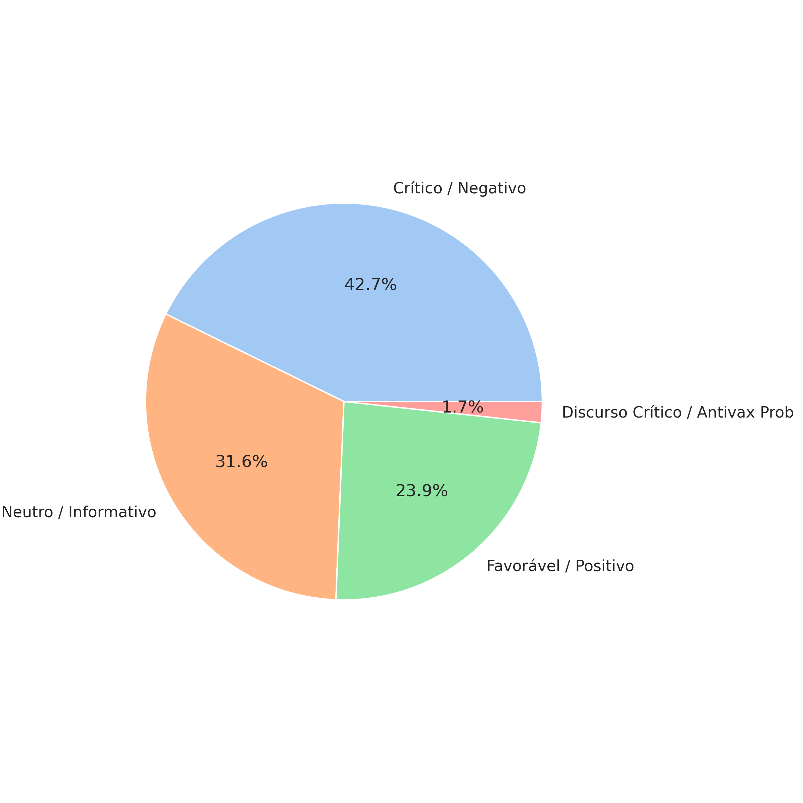

✨ Resumo Gerado por IA (Últimos 7 dias)
👍 Principais Opiniões Positivas
- **Avanço Legislativo:** Aprovação no Senado da inclusão da vacina contra herpes-zóster no SUS para pessoas com mais de 50 anos. - **Alertas e Revacinação:** Aumento nos casos de Covid-19 e sarampo gerando alertas de saúde e reforçando a necessidade de doses de atualização. - **Ações Locais de Mobilização:** Ampliação do acesso à imunização nos municípios por meio de mutirões nos finais de semana, vacinação em escolas, campanhas antirrábicas e atualização de imunizantes.
⚠️ Principais Críticas e Preocupações
Os textos evidenciam a preocupação com o aumento de casos graves de Covid-19, raiva e potenciais novas variantes, somada à baixa adesão vacinal em grupos de risco como gestantes. Diante desse cenário, destacam-se ações governamentais e de especialistas focadas em mutirões de vacinação, atualização de cadernetas e orientação pública para conter o avanço de surtos.
Análise de Dados e Sentimentos



Destaques da Semana
Top 10 Mais Positivos
-
Score: 0.79 Notícia PortalLer na íntegra →
Amazonas atinge 96,80% de cobertura vacinal contra o sarampo, mas reforça alerta após regi...
Amazonas atinge 96,80% de cobertura vacinal contra o sarampo, mas reforça alerta após registrar 24 casos em 2026 - G1
-
Score: 0.64 Notícia PortalLer na íntegra →
Senado aprova inclusão de vacina contra herpes-zóster no SUS; projeto segue para a Câmara ...
Senado aprova inclusão de vacina contra herpes-zóster no SUS; projeto segue para a Câmara - G1
-
Score: 0.59 Notícia PortalLer na íntegra →
Ufes alerta sobre aumento de casos de Covid e recomenda vacinação - Universidade Federal d...
Ufes alerta sobre aumento de casos de Covid e recomenda vacinação - Universidade Federal do Espírito Santo
-
Score: 0.56 Notícia PortalLer na íntegra →
Centros de saúde de Belo Horizonte abrem neste sábado (14) para vacinação contra a covid-1...
Centros de saúde de Belo Horizonte abrem neste sábado (14) para vacinação contra a covid-19 - Prefeitura de Belo Horizonte
-
Score: 0.48 Notícia PortalLer na íntegra →
Casos de Covid-19 sobem no Brasil: já tomei a vacina, preciso tomar de novo? Veja a cada q...
Casos de Covid-19 sobem no Brasil: já tomei a vacina, preciso tomar de novo? Veja a cada quanto tempo - G1
-
Score: 0.44 Notícia PortalLer na íntegra →
Vacina contra herpes-zóster no SUS é aprovada em comissão do Senado; veja quem terá direit...
Vacina contra herpes-zóster no SUS é aprovada em comissão do Senado; veja quem terá direito - Só Notícia Boa
-
Score: 0.40 Notícia PortalLer na íntegra →
Comissão do Senado aprova vacina contra herpes-zóster no SUS; projeto vai à Câmara - Folha...
Comissão do Senado aprova vacina contra herpes-zóster no SUS; projeto vai à Câmara - Folha de S.Paulo
-
Score: 0.40 Notícia PortalLer na íntegra →
Comissão do Senado aprova vacina contra herpes-zóster no SUS; projeto vai à Câmara - ICL N...
Comissão do Senado aprova vacina contra herpes-zóster no SUS; projeto vai à Câmara - ICL Notícias
-
Score: 0.40 Notícia PortalLer na íntegra →
Olinda vacina mais de 13 mil animais e realiza segundo Dia D de vacinação antirrábica nest...
Olinda vacina mais de 13 mil animais e realiza segundo Dia D de vacinação antirrábica neste sábado (14) - Prefeitura de Olinda
-
Score: 0.38 Notícia PortalLer na íntegra →
BH substitui vacina Pneumo 23 pela Pneumo 20 na rede municipal de saúde - Prefeitura de Be...
BH substitui vacina Pneumo 23 pela Pneumo 20 na rede municipal de saúde - Prefeitura de Belo Horizonte
Top 10 Mais Negativos
-
Score: -0.78 Notícia PortalLer na íntegra →
Metástase desaparece no primeiro paciente tratado com nova vacina russa contra o câncer - ...
Metástase desaparece no primeiro paciente tratado com nova vacina russa contra o câncer - Brasil 247
-
Score: -0.68 Notícia PortalLer na íntegra →
Com aumento de casos de raiva, CCZ faz mutirão de vacinação na Capital - Midiamax
Com aumento de casos de raiva, CCZ faz mutirão de vacinação na Capital - Midiamax
-
Score: -0.59 Notícia PortalLer na íntegra →
No grupo de risco, 19,5 mil gestantes de MS não tomaram vacina contra Covid-19 - Midiamax
No grupo de risco, 19,5 mil gestantes de MS não tomaram vacina contra Covid-19 - Midiamax
-
Score: -0.40 Notícia PortalLer na íntegra →
Nova variante da Covid pode provocar outra onda no Brasil? - SBT News
Nova variante da Covid pode provocar outra onda no Brasil? - SBT News
-
Score: -0.38 Notícia PortalLer na íntegra →
Casos de covid grave aumentam em cinco estados e no DF, diz Fiocruz - UOL Notícias
Casos de covid grave aumentam em cinco estados e no DF, diz Fiocruz - UOL Notícias
-
Score: -0.36 Notícia PortalLer na íntegra →
Com tendência de alta da Covid-19 no Brasil, especialistas reforçam a importância da vacin...
Com tendência de alta da Covid-19 no Brasil, especialistas reforçam a importância da vacinação para evitar casos graves e mortes, principalmente entre os mais vulneráveis. Isso não significa, porém, que toda a população precise receber novas doses. A im - Instagram
-
Score: -0.30 Notícia PortalLer na íntegra →
VÍDEO: Coordenadora explica onde se vacinar contra a dengue em Cajazeiras e tira dúvidas s...
VÍDEO: Coordenadora explica onde se vacinar contra a dengue em Cajazeiras e tira dúvidas sobre calendário - Diário do Sertão
-
Score: -0.15 Notícia PortalLer na íntegra →
Saúde orienta atualização da vacina contra o sarampo para fiéis e viajantes com destino ao...
Saúde orienta atualização da vacina contra o sarampo para fiéis e viajantes com destino ao Peru - Goias.GOV
-
Score: -0.15 Notícia PortalLer na íntegra →
ESP/CE abre 35 vagas para nova turma de Especialização Multiprofissional em Imunização - G...
ESP/CE abre 35 vagas para nova turma de Especialização Multiprofissional em Imunização - Governo do Estado do Ceará
-
Score: -0.15 Notícia PortalLer na íntegra →
Cmeis de Palmas recebem ação de vacinação para atualizar caderneta de crianças - Prefeitur...
Cmeis de Palmas recebem ação de vacinação para atualizar caderneta de crianças - Prefeitura de Palmas